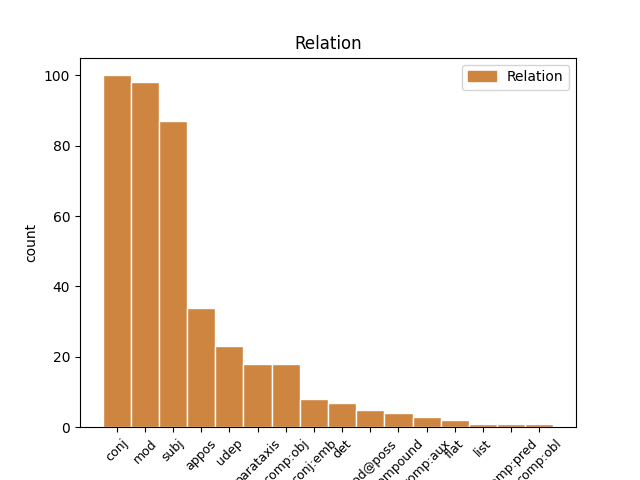
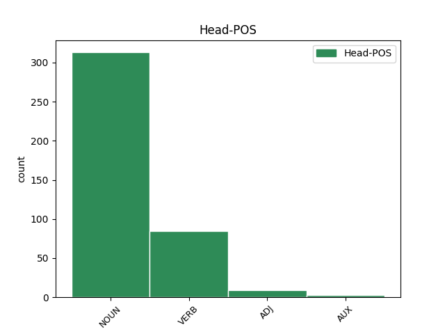
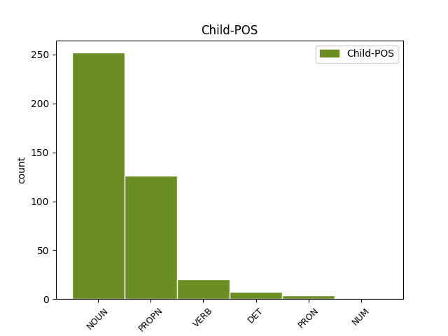

Distribution of features within this leaf



Agreement Rules sorted by frequency.
- When the dependent token is the conjunct(conj) of the head token, and the head token is NOUN and the dependent token is NOUN.
1 Эрхүүгэй _ _ _ _ 0 _ _ _
2 можо _ _ _ _ 0 _ _ _
3 ( _ _ _ _ 0 _ _ _
4 ) _ _ _ _ 0 _ _ _
5 — _ _ _ _ 0 _ _ _
6 Оросой _ _ _ _ 0 _ _ _
7 холбоото _ _ _ _ 0 _ _ _
8 уласай УЛАСАЙ NOUN _ Animacy=Inan|Case=Ins|Gender=Fem|Number=Sing 0 _ _ _
9 болон _ _ _ _ 0 _ _ _
10 Сибириин _ _ _ _ 0 _ _ _
11 холбооной холбоона NOUN _ Animacy=Inan|Case=Ins|Gender=Fem|Number=Sing 8 conj _ _
12 тойрогой _ _ _ _ 0 _ _ _
13 можо _ _ _ _ 0 _ _ _
14 . _ _ _ _ 0 _ _ _
1 Шекспирай ШЕКСПИРА NOUN _ Animacy=Inan|Case=Ins|Gender=Fem|Number=Sing 0 _ _ _
2 « _ _ _ _ 0 _ _ _
3 Виндзорой _ _ _ _ 0 _ _ _
4 наада _ _ _ _ 0 _ _ _
5 хараһаша _ _ _ _ 0 _ _ _
6 » _ _ _ _ 0 _ _ _
7 зохёолой _ _ _ _ 0 _ _ _
8 дахи ДАХА NOUN _ Animacy=Anim|Case=Gen|Gender=Fem|Number=Sing 1 mod _ _
9 Ном _ _ _ _ 0 _ _ _
10 зохёол _ _ _ _ 0 _ _ _
11 * _ _ _ _ 0 _ _ _
12 Бушен _ _ _ _ 0 _ _ _
13 А. _ _ _ _ 0 _ _ _
14 , _ _ _ _ 0 _ _ _
15 Рождение _ _ _ _ 0 _ _ _
16 оперы _ _ _ _ 0 _ _ _
17 . _ _ _ _ 0 _ _ _
1 Эрхүүгэй _ _ _ _ 0 _ _ _
2 можо _ _ _ _ 0 _ _ _
3 ( _ _ _ _ 0 _ _ _
4 ) _ _ _ _ 0 _ _ _
5 — _ _ _ _ 0 _ _ _
6 Оросой Оросa PROPN _ Animacy=Inan|Case=Ins|Gender=Fem|Number=Sing 7 mod _ _
7 холбоото ХОЛБООТО NOUN _ Animacy=Inan|Case=Ins|Gender=Fem|Number=Sing 0 _ _ _
8 уласай _ _ _ _ 0 _ _ _
9 болон _ _ _ _ 0 _ _ _
10 Сибириин _ _ _ _ 0 _ _ _
11 холбооной _ _ _ _ 0 _ _ _
12 тойрогой _ _ _ _ 0 _ _ _
13 можо _ _ _ _ 0 _ _ _
14 . _ _ _ _ 0 _ _ _
1 Эрдэм ЭРДЭМ PROPN _ Animacy=Anim|Case=Nom|Gender=Masc|Number=Sing 2 subj _ _
2 ухаанай УХААНТЬ VERB _ Aspect=Imp|Gender=Masc|Mood=Ind|Number=Sing|Tense=Past|VerbForm=Fin 0 _ _ _
3 зохёолые _ _ _ _ 0 _ _ _
4 гаргадаг _ _ _ _ 0 _ _ _
5 . _ _ _ _ 0 _ _ _
1 Эхин ЭХИН PROPN _ Animacy=Inan|Case=Nom|Gender=Masc|Number=Sing 4 subj _ _
2 - _ _ _ _ 0 _ _ _
3 Байгал _ _ _ _ 0 _ _ _
4 далай далай NOUN _ Animacy=Anim|Case=Nom|Gender=Masc|Number=Sing 0 _ _ _
5 . _ _ _ _ 0 _ _ _
1 Эдэй _ _ _ _ 0 _ _ _
2 засаг _ _ _ _ 0 _ _ _
3 Самсонгой _ _ _ _ 0 _ _ _
4 түб ТҮБ NOUN _ Animacy=Inan|Case=Acc|Gender=Masc|Number=Sing 0 _ _ _
5 , _ _ _ _ 0 _ _ _
6 Сеул СЕУЛ PROPN _ Animacy=Inan|Case=Acc|Gender=Masc|Number=Sing 4 appos _ _
7 . _ _ _ _ 0 _ _ _
1 Цонгоолчууд ЦОНГООЛЧУУД NOUN _ Animacy=Inan|Case=Nom|Gender=Masc|Number=Sing 0 _ _ _
2 ( _ _ _ _ 0 _ _ _
3 сонголнууд СОНГОЛНУУД NOUN _ Animacy=Inan|Case=Nom|Gender=Masc|Number=Sing 1 appos _ _
4 ) _ _ _ _ 0 _ _ _
5 - _ _ _ _ 0 _ _ _
6 монгол _ _ _ _ 0 _ _ _
7 угсаатан _ _ _ _ 0 _ _ _
8 . _ _ _ _ 0 _ _ _
1 Эбилгын _ _ _ _ 0 _ _ _
2 аймаг аймаг NOUN _ Animacy=Inan|Case=Nom|Gender=Fem|Number=Sing 8 subj _ _
3 ( _ _ _ _ 0 _ _ _
4 ) _ _ _ _ 0 _ _ _
5 — _ _ _ _ 0 _ _ _
6 Буряад _ _ _ _ 0 _ _ _
7 Уласай _ _ _ _ 0 _ _ _
8 аймаг аймаг NOUN _ Animacy=Inan|Case=Nom|Gender=Fem|Number=Sing 0 _ _ _
9 . _ _ _ _ 0 _ _ _
1 Эрдэм _ _ _ _ 0 _ _ _
2 ухаанай УХААНТЬ VERB _ Aspect=Imp|Gender=Masc|Mood=Ind|Number=Sing|Tense=Past|VerbForm=Fin 0 _ _ _
3 зохёолые _ _ _ _ 0 _ _ _
4 гаргадаг ГАРГАДАГ NOUN _ Animacy=Anim|Case=Nom|Gender=Masc|Number=Sing 2 subj _ _
5 . _ _ _ _ 0 _ _ _
1 Эдэй _ _ _ _ 0 _ _ _
2 засаг ЗАСАТЬ VERB _ Aspect=Perf|Gender=Masc|Mood=Ind|Number=Sing|Tense=Past|VerbForm=Fin 0 _ _ _
3 Самсонгой _ _ _ _ 0 _ _ _
4 түб ТҮБ NOUN _ Animacy=Inan|Case=Acc|Gender=Masc|Number=Sing 2 comp:obj _ _
5 , _ _ _ _ 0 _ _ _
6 Сеул _ _ _ _ 0 _ _ _
7 . _ _ _ _ 0 _ _ _
1 Франц _ _ _ _ 0 _ _ _
2 Википеэди _ _ _ _ 0 _ _ _
3 ( _ _ _ _ 0 _ _ _
4 ород _ _ _ _ 0 _ _ _
5 : _ _ _ _ 0 _ _ _
6 Французская _ _ _ _ 0 _ _ _
7 Википедия _ _ _ _ 0 _ _ _
8 ) _ _ _ _ 0 _ _ _
9 – _ _ _ _ 0 _ _ _
10 франц _ _ _ _ 0 _ _ _
11 хэлэнэй _ _ _ _ 0 _ _ _
12 нэбтэрхэй _ _ _ _ 0 _ _ _
13 толи _ _ _ _ 0 _ _ _
14 бэшэгынь _ _ _ _ 0 _ _ _
15 сүлөөтэ _ _ _ _ 0 _ _ _
16 агуулгатай _ _ _ _ 0 _ _ _
17 , _ _ _ _ 0 _ _ _
18 Creative _ _ _ _ 0 _ _ _
19 Commons _ _ _ _ 0 _ _ _
20 Attribution _ _ _ _ 0 _ _ _
21 - _ _ _ _ 0 _ _ _
22 ShareAlike _ _ _ _ 0 _ _ _
23 лицензитэй лицензит NOUN _ Animacy=Inan|Case=Ins|Gender=Fem|Number=Sing 28 udep _ _
24 бидэнэй _ _ _ _ 0 _ _ _
25 сайн _ _ _ _ 0 _ _ _
26 дүрын _ _ _ _ 0 _ _ _
27 оролсоотойгоор _ _ _ _ 0 _ _ _
28 баяшадаг баяша VERB _ Aspect=Perf|Case=Nom|Gender=Fem|Number=Sing|Tense=Past|VerbForm=Part|Voice=Act 0 _ _ _
29 нэбтэрхэй _ _ _ _ 0 _ _ _
30 толи _ _ _ _ 0 _ _ _
31 юм _ _ _ _ 0 _ _ _
32 . _ _ _ _ 0 _ _ _
1 СССР _ _ _ _ 0 _ _ _
2 - _ _ _ _ 0 _ _ _
3 эй _ _ _ _ 0 _ _ _
4 Уран _ _ _ _ 0 _ _ _
5 зохёолшодой зохёолшода NOUN _ Animacy=Inan|Case=Ins|Gender=Fem|Number=Sing 0 _ _ _
6 болон _ _ _ _ 0 _ _ _
7 Сэтгүүлшэдэй Сэтгүүлшэ PROPN _ Animacy=Inan|Case=Ins|Gender=Fem|Number=Sing 5 conj _ _
8 холбооной _ _ _ _ 0 _ _ _
9 гэшүүн _ _ _ _ 0 _ _ _
10 , _ _ _ _ 0 _ _ _
11 Буряад _ _ _ _ 0 _ _ _
12 Уласай _ _ _ _ 0 _ _ _
13 соёлой _ _ _ _ 0 _ _ _
14 габьяата _ _ _ _ 0 _ _ _
15 хүдэлмэрилэгшэ _ _ _ _ 0 _ _ _
16 , _ _ _ _ 0 _ _ _
17 Ярослав _ _ _ _ 0 _ _ _
18 Гашегай _ _ _ _ 0 _ _ _
19 нэрэмжэтэ _ _ _ _ 0 _ _ _
20 шангай _ _ _ _ 0 _ _ _
21 лауреат _ _ _ _ 0 _ _ _
22 , _ _ _ _ 0 _ _ _
23 поэт _ _ _ _ 0 _ _ _
24 , _ _ _ _ 0 _ _ _
25 драматург _ _ _ _ 0 _ _ _
26 , _ _ _ _ 0 _ _ _
27 оршуулагша _ _ _ _ 0 _ _ _
28 Г. _ _ _ _ 0 _ _ _
29 Дашабылов _ _ _ _ 0 _ _ _
30 гушаад _ _ _ _ 0 _ _ _
31 шүлэгэй _ _ _ _ 0 _ _ _
32 болон _ _ _ _ 0 _ _ _
33 прозын _ _ _ _ 0 _ _ _
34 номуудай _ _ _ _ 0 _ _ _
35 автор _ _ _ _ 0 _ _ _
36 болоно _ _ _ _ 0 _ _ _
37 . _ _ _ _ 0 _ _ _
1 Һамгатай _ _ _ _ 0 _ _ _
2 хоёр _ _ _ _ 0 _ _ _
3 эрэнь _ _ _ _ 0 _ _ _
4 Гэр _ _ _ _ 0 _ _ _
5 бүлэ _ _ _ _ 0 _ _ _
6 — _ _ _ _ 0 _ _ _
7 гэжэ _ _ _ _ 0 _ _ _
8 хамтадаа _ _ _ _ 0 _ _ _
9 амидардаг _ _ _ _ 0 _ _ _
10 , _ _ _ _ 0 _ _ _
11 бэе _ _ _ _ 0 _ _ _
12 бэетэйгээ _ _ _ _ 0 _ _ _
13 ямар _ _ _ _ 0 _ _ _
14 нэгэн _ _ _ _ 0 _ _ _
15 холбоотой холбоот NOUN _ Animacy=Inan|Case=Ins|Gender=Fem|Number=Sing 0 _ _ _
16 ( _ _ _ _ 0 _ _ _
17 шуһан _ _ _ _ 0 _ _ _
18 холбоотой холбоот NOUN _ Animacy=Inan|Case=Ins|Gender=Fem|Number=Sing 15 parataxis _ _
19 , _ _ _ _ 0 _ _ _
20 гэрлэһэн _ _ _ _ 0 _ _ _
21 гэхэ _ _ _ _ 0 _ _ _
22 мэтэ _ _ _ _ 0 _ _ _
23 ) _ _ _ _ 0 _ _ _
24 бүлэг _ _ _ _ 0 _ _ _
25 хүмүүн _ _ _ _ 0 _ _ _
26 гү _ _ _ _ 0 _ _ _
27 , _ _ _ _ 0 _ _ _
28 али _ _ _ _ 0 _ _ _
29 амитадые _ _ _ _ 0 _ _ _
30 ( _ _ _ _ 0 _ _ _
31 зарим _ _ _ _ 0 _ _ _
32 амитад _ _ _ _ 0 _ _ _
33 үрэ _ _ _ _ 0 _ _ _
34 түлөө _ _ _ _ 0 _ _ _
35 асаржа _ _ _ _ 0 _ _ _
36 гэр _ _ _ _ 0 _ _ _
37 бүлэтэй _ _ _ _ 0 _ _ _
38 түһөөтэй _ _ _ _ 0 _ _ _
39 зүйлые _ _ _ _ 0 _ _ _
40 бүрдүүлдэг _ _ _ _ 0 _ _ _
41 ) _ _ _ _ 0 _ _ _
42 хэлэнэ _ _ _ _ 0 _ _ _
43 . _ _ _ _ 0 _ _ _
1 Хоца _ _ _ _ 0 _ _ _
2 Намсараев _ _ _ _ 0 _ _ _
3 хоёр _ _ _ _ 0 _ _ _
4 дахин _ _ _ _ 0 _ _ _
5 Хориин _ _ _ _ 0 _ _ _
6 хошуунай _ _ _ _ 0 _ _ _
7 комитедэй _ _ _ _ 0 _ _ _
8 гэшγγнээр _ _ _ _ 0 _ _ _
9 hунгагдаа hунгагд VERB _ Gender=Masc|Number=Sing|VerbForm=Inf|Voice=Act 0 _ _ _
10 , _ _ _ _ 0 _ _ _
11 1922 _ _ _ _ 0 _ _ _
12 ондо _ _ _ _ 0 _ _ _
13 Хэжэнгын _ _ _ _ 0 _ _ _
14 аймагай _ _ _ _ 0 _ _ _
15 гγйсэдхэхы _ _ _ _ 0 _ _ _
16 комитедтэ _ _ _ _ 0 _ _ _
17 эдэбхитэйгээр _ _ _ _ 0 _ _ _
18 ажаллаа ажалл VERB _ Gender=Masc|Number=Sing|VerbForm=Inf|Voice=Act 9 conj _ _
19 . _ _ _ _ 0 _ _ _
1 Эдэнэй _ _ _ _ 0 _ _ _
2 тоодо _ _ _ _ 0 _ _ _
3 « _ _ _ _ 0 _ _ _
4 Кочующий КОЧУЮЩИЙ VERB _ Aspect=Imp|Case=Nom|Gender=Masc|Number=Sing|Tense=Pres|VerbForm=Part|Voice=Act 5 mod _ _
5 фронт ФРОНТ NOUN _ Animacy=Inan|Case=Nom|Gender=Masc|Number=Sing 0 _ _ _
6 » _ _ _ _ 0 _ _ _
7 , _ _ _ _ 0 _ _ _
8 « _ _ _ _ 0 _ _ _
9 Открытие _ _ _ _ 0 _ _ _
10 » _ _ _ _ 0 _ _ _
11 , _ _ _ _ 0 _ _ _
12 « _ _ _ _ 0 _ _ _
13 Горький _ _ _ _ 0 _ _ _
14 можжевельник _ _ _ _ 0 _ _ _
15 » _ _ _ _ 0 _ _ _
16 , _ _ _ _ 0 _ _ _
17 « _ _ _ _ 0 _ _ _
18 В _ _ _ _ 0 _ _ _
19 ночь _ _ _ _ 0 _ _ _
20 лунного _ _ _ _ 0 _ _ _
21 затмения _ _ _ _ 0 _ _ _
22 » _ _ _ _ 0 _ _ _
23 , _ _ _ _ 0 _ _ _
24 Нет _ _ _ _ 0 _ _ _
25 чужой _ _ _ _ 0 _ _ _
26 земли _ _ _ _ 0 _ _ _
27 » _ _ _ _ 0 _ _ _
28 болон _ _ _ _ 0 _ _ _
29 « _ _ _ _ 0 _ _ _
30 Батожабай _ _ _ _ 0 _ _ _
31 » _ _ _ _ 0 _ _ _
32 гэhэн _ _ _ _ 0 _ _ _
33 документальна _ _ _ _ 0 _ _ _
34 кино _ _ _ _ 0 _ _ _
35 . _ _ _ _ 0 _ _ _
1 Я _ _ _ _ 0 _ _ _
2 не _ _ _ _ 0 _ _ _
3 дышу _ _ _ _ 0 _ _ _
4 , _ _ _ _ 0 _ _ _
5 а _ _ _ _ 0 _ _ _
6 пью _ _ _ _ 0 _ _ _
7 благоуханье _ _ _ _ 0 _ _ _
8 Моей мой DET _ Case=Gen|Gender=Fem|Number=Sing 9 det _ _
9 земли земля NOUN _ Animacy=Inan|Case=Gen|Gender=Fem|Number=Sing 0 _ _ _
10 равнинной _ _ _ _ 0 _ _ _
11 и _ _ _ _ 0 _ _ _
12 лесной _ _ _ _ 0 _ _ _
13 . _ _ _ _ 0 _ _ _
1 Хүдөө _ _ _ _ 0 _ _ _
2 ажахын _ _ _ _ 0 _ _ _
3 химинь _ _ _ _ 0 _ _ _
4 химиин _ _ _ _ 0 _ _ _
5 үтэгжүүлгэ _ _ _ _ 0 _ _ _
6 , _ _ _ _ 0 _ _ _
7 химиин _ _ _ _ 0 _ _ _
8 инсектицид _ _ _ _ 0 _ _ _
9 , _ _ _ _ 0 _ _ _
10 пестицид пестицид NOUN _ Animacy=Inan|Case=Nom|Gender=Masc|Number=Sing 0 _ _ _
11 , _ _ _ _ 0 _ _ _
12 фунгицид фунгицид NOUN _ Animacy=Inan|Case=Nom|Gender=Masc|Number=Sing 10 conj:emb _ _
13 , _ _ _ _ 0 _ _ _
14 хүрьһэнэй _ _ _ _ 0 _ _ _
15 нүхэн _ _ _ _ 0 _ _ _
16 һэргээлтэ _ _ _ _ 0 _ _ _
17 , _ _ _ _ 0 _ _ _
18 хүдөө _ _ _ _ 0 _ _ _
19 ажахын _ _ _ _ 0 _ _ _
20 бүтээгдэхүүнэй _ _ _ _ 0 _ _ _
21 шудалга _ _ _ _ 0 _ _ _
22 , _ _ _ _ 0 _ _ _
23 үндэр _ _ _ _ 0 _ _ _
24 ашаг _ _ _ _ 0 _ _ _
25 шэмтэ _ _ _ _ 0 _ _ _
26 малай _ _ _ _ 0 _ _ _
27 тэжээлэй _ _ _ _ 0 _ _ _
28 хэрэгсээ _ _ _ _ 0 _ _ _
29 гэхэ _ _ _ _ 0 _ _ _
30 мэтын _ _ _ _ 0 _ _ _
31 асуудалнуудые _ _ _ _ 0 _ _ _
32 шиидэдэг _ _ _ _ 0 _ _ _
33 . _ _ _ _ 0 _ _ _
1 Онсолиг Онсолиг NOUN _ Animacy=Anim|Case=Nom|Gender=Masc|Number=Sing 0 _ _ _
2 Ута Ута PROPN _ Animacy=Anim|Case=Nom|Gender=Masc|Number=Sing 1 flat _ _
3 эгшэг _ _ _ _ 0 _ _ _
4 абяатай _ _ _ _ 0 _ _ _
5 . _ _ _ _ 0 _ _ _
1 Консепсьон консепсьон NOUN _ Animacy=Anim|Case=Nom|Gender=Masc|Number=Sing 6 subj _ _
2 ( _ _ _ _ 0 _ _ _
3 Concepción _ _ _ _ 0 _ _ _
4 ) _ _ _ _ 0 _ _ _
5 - _ _ _ _ 0 _ _ _
6 Чилиин Чилиин ADJ _ Animacy=Anim|Case=Nom|Gender=Masc|Number=Sing 0 _ _ _
7 хото _ _ _ _ 0 _ _ _
8 . _ _ _ _ 0 _ _ _
1 Польштойрог _ _ _ _ 0 _ _ _
2 , _ _ _ _ 0 _ _ _
3 Польш _ _ _ _ 0 _ _ _
4 улас _ _ _ _ 0 _ _ _
5 . _ _ _ _ 0 _ _ _
6 Polandball _ _ _ _ 0 _ _ _
7 буюу _ _ _ _ 0 _ _ _
8 Польштойрог _ _ _ _ 0 _ _ _
9 , _ _ _ _ 0 _ _ _
10 Уластойрог _ _ _ _ 0 _ _ _
11 - _ _ _ _ 0 _ _ _
12 интэрнэт интэрнэт NOUN _ Animacy=Inan|Case=Nom|Gender=Masc|Number=Sing 14 compound _ _
13 - _ _ _ _ 0 _ _ _
14 мем мем NOUN _ Animacy=Inan|Case=Nom|Gender=Masc|Number=Sing 0 _ _ _
15 , _ _ _ _ 0 _ _ _
16 байгуулха _ _ _ _ 0 _ _ _
17 ярмаанынь _ _ _ _ 0 _ _ _
18 сайт _ _ _ _ 0 _ _ _
19 Krautchan.net _ _ _ _ 0 _ _ _
20 хабаадаhан _ _ _ _ 0 _ _ _
21 хун _ _ _ _ 0 _ _ _
22 /INT/ _ _ _ _ 0 _ _ _
23 , _ _ _ _ 0 _ _ _
24 2009 _ _ _ _ 0 _ _ _
25 жэл _ _ _ _ 0 _ _ _
26 . _ _ _ _ 0 _ _ _
1 Окаханджа _ _ _ _ 0 _ _ _
2 гарал гарать VERB _ Aspect=Imp|Gender=Masc|Mood=Ind|Number=Sing|Tense=Past|VerbForm=Fin 0 _ _ _
3 , _ _ _ _ 0 _ _ _
4 1903 _ _ _ _ 0 _ _ _
5 он _ _ _ _ 0 _ _ _
6 Окаханджа _ _ _ _ 0 _ _ _
7 — _ _ _ _ 0 _ _ _
8 тойрогой _ _ _ _ 0 _ _ _
9 шухала шухал NOUN _ Animacy=Anim|Case=Gen|Gender=Masc|Number=Sing 2 conj _ _
10 хото _ _ _ _ 0 _ _ _
11 . _ _ _ _ 0 _ _ _
1 Масса _ _ _ _ 0 _ _ _
2 ( _ _ _ _ 0 _ _ _
3 гэхэһээ _ _ _ _ 0 _ _ _
4 гаралтай _ _ _ _ 0 _ _ _
5 ) _ _ _ _ 0 _ _ _
6 гэжэ _ _ _ _ 0 _ _ _
7 физикын _ _ _ _ 0 _ _ _
8 шэнжэлхэ _ _ _ _ 0 _ _ _
9 ухаанда _ _ _ _ 0 _ _ _
10 алибаа _ _ _ _ 0 _ _ _
11 бодосой _ _ _ _ 0 _ _ _
12 гурбан _ _ _ _ 0 _ _ _
13 шэнжэ _ _ _ _ 0 _ _ _
14 шанарай _ _ _ _ 0 _ _ _
15 ( _ _ _ _ 0 _ _ _
16 инерциал _ _ _ _ 0 _ _ _
17 масс _ _ _ _ 0 _ _ _
18 , _ _ _ _ 0 _ _ _
19 эдибхэтэй _ _ _ _ 0 _ _ _
20 гравитациин _ _ _ _ 0 _ _ _
21 масса _ _ _ _ 0 _ _ _
22 , _ _ _ _ 0 _ _ _
23 эдибхэгүй _ _ _ _ 0 _ _ _
24 гравитациин гравитаци NOUN _ Animacy=Inan|Case=Gen|Gender=Fem|Number=Plur 25 mod@poss _ _
25 масса масса NOUN _ Animacy=Inan|Case=Nom|Gender=Fem|Number=Sing 0 _ _ _
26 ) _ _ _ _ 0 _ _ _
27 али _ _ _ _ 0 _ _ _
28 нэгые _ _ _ _ 0 _ _ _
29 тодорхойлдог _ _ _ _ 0 _ _ _
30 хэмжэгдэхүүн _ _ _ _ 0 _ _ _
31 юм _ _ _ _ 0 _ _ _
32 . _ _ _ _ 0 _ _ _
1 Поэт _ _ _ _ 0 _ _ _
2 ород _ _ _ _ 0 _ _ _
3 ба _ _ _ _ 0 _ _ _
4 совет _ _ _ _ 0 _ _ _
5 классигуудай КЛАССИГУУДАТЬ VERB _ Animacy=Inan|Case=Ins|Gender=Fem|Number=Sing 0 _ _ _
6 зохёолнуудые _ _ _ _ 0 _ _ _
7 олоор _ _ _ _ 0 _ _ _
8 оршуулаа _ _ _ _ 0 _ _ _
9 юм _ _ _ _ 0 _ _ _
10 ( _ _ _ _ 0 _ _ _
11 М. М. PROPN _ Animacy=Anim|Case=Nom|Gender=Fem|Number=Sing 5 parataxis _ _
1 Түлхихэ түлхихэ NOUN _ Animacy=Inan|Case=Nom|Gender=Neut|Number=Sing 0 _ _ _
2 , _ _ _ _ 0 _ _ _
3 үргэхэ үргэхэ VERB _ Animacy=Inan|Case=Nom|Gender=Neut|Number=Sing 1 conj _ _
4 , _ _ _ _ 0 _ _ _
5 татаха _ _ _ _ 0 _ _ _
6 зэрэгээр _ _ _ _ 0 _ _ _
7 хүсэн _ _ _ _ 0 _ _ _
8 үйлэшэлжэ _ _ _ _ 0 _ _ _
9 болоно _ _ _ _ 0 _ _ _
10 . _ _ _ _ 0 _ _ _
1 1898 _ _ _ _ 0 _ _ _
2 ондо _ _ _ _ 0 _ _ _
3 Минск _ _ _ _ 0 _ _ _
4 хотодо _ _ _ _ 0 _ _ _
5 байхадаа _ _ _ _ 0 _ _ _
6 Ородой ОРОДА NOUN _ Animacy=Inan|Case=Ins|Gender=Fem|Number=Sing 11 udep _ _
7 социал _ _ _ _ 0 _ _ _
8 - _ _ _ _ 0 _ _ _
9 демократ _ _ _ _ 0 _ _ _
10 намые _ _ _ _ 0 _ _ _
11 байгуулба байгуулба NOUN _ Animacy=Inan|Case=Nom|Gender=Fem|Number=Sing 0 _ _ _
12 . _ _ _ _ 0 _ _ _
1 Buryat _ _ _ _ 0 _ _ _
2 Airlines _ _ _ _ 0 _ _ _
3 али _ _ _ _ 0 _ _ _
4 Бурал _ _ _ _ 0 _ _ _
5 ( _ _ _ _ 0 _ _ _
6 ород _ _ _ _ 0 _ _ _
7 : _ _ _ _ 0 _ _ _
8 Бурятские _ _ _ _ 0 _ _ _
9 авиалинии _ _ _ _ 0 _ _ _
10 ) _ _ _ _ 0 _ _ _
11 - _ _ _ _ 0 _ _ _
12 Буряад _ _ _ _ 0 _ _ _
13 Ороной _ _ _ _ 0 _ _ _
14 авиаци авиаця NOUN _ Animacy=Inan|Case=Gen|Gender=Fem|Number=Sing 0 _ _ _
15 . _ _ _ _ 0 _ _ _
16 1992 _ _ _ _ 0 _ _ _
17 оной _ _ _ _ 0 _ _ _
18 байгуулагдсан байгуулагд VERB _ Aspect=Perf|Case=Gen|Gender=Fem|Number=Sing|Tense=Past|VerbForm=Part|Voice=Pass 14 parataxis _ _
19 . _ _ _ _ 0 _ _ _
1 XI _ _ _ _ 0 _ _ _
2 Олимпиадын _ _ _ _ 0 _ _ _
3 наадан НААДАН NOUN _ Animacy=Anim|Case=Nom|Gender=Masc|Number=Sing 0 _ _ _
4 ( _ _ _ _ 0 _ _ _
5 1936 _ _ _ _ 0 _ _ _
6 он ОН PRON _ Case=Nom|Gender=Masc|Number=Sing|Person=3 3 appos _ _
7 ) _ _ _ _ 0 _ _ _
8 . _ _ _ _ 0 _ _ _
1 Бальбуров Бальбуров PROPN _ Animacy=Anim|Case=Nom|Gender=Masc|Number=Sing 13 subj _ _
2 Африкан _ _ _ _ 0 _ _ _
3 Андреевич _ _ _ _ 0 _ _ _
4 ( _ _ _ _ 0 _ _ _
5 1919 _ _ _ _ 0 _ _ _
6 - _ _ _ _ 0 _ _ _
7 1980 _ _ _ _ 0 _ _ _
8 , _ _ _ _ 0 _ _ _
9 Буряад _ _ _ _ 0 _ _ _
10 Улас _ _ _ _ 0 _ _ _
11 ) _ _ _ _ 0 _ _ _
12 — _ _ _ _ 0 _ _ _
13 буряадай буряадай ADJ _ Animacy=Anim|Case=Nom|Gender=Masc|Number=Sing 0 _ _ _
14 уран _ _ _ _ 0 _ _ _
15 зохёолшо _ _ _ _ 0 _ _ _
16 . _ _ _ _ 0 _ _ _
1 Большая _ _ _ _ 0 _ _ _
2 и _ _ _ _ 0 _ _ _
3 Маленькая маленький ADJ _ Case=Nom|Degree=Pos|Gender=Fem|Number=Sing 0 _ _ _
4 » _ _ _ _ 0 _ _ _
5 , _ _ _ _ 0 _ _ _
6 « _ _ _ _ 0 _ _ _
7 Любовь Любовь NOUN _ Animacy=Inan|Case=Nom|Gender=Fem|Number=Sing 3 conj _ _
8 в _ _ _ _ 0 _ _ _
9 квадрате _ _ _ _ 0 _ _ _
10 ринга _ _ _ _ 0 _ _ _
11 » _ _ _ _ 0 _ _ _
12 , _ _ _ _ 0 _ _ _
13 « _ _ _ _ 0 _ _ _
14 Там _ _ _ _ 0 _ _ _
15 , _ _ _ _ 0 _ _ _
16 за _ _ _ _ 0 _ _ _
17 тугими _ _ _ _ 0 _ _ _
18 канатами _ _ _ _ 0 _ _ _
19 ринга _ _ _ _ 0 _ _ _
20 » _ _ _ _ 0 _ _ _
21 , _ _ _ _ 0 _ _ _
22 « _ _ _ _ 0 _ _ _
23 Нима _ _ _ _ 0 _ _ _
24 Ивахинов _ _ _ _ 0 _ _ _
25 и _ _ _ _ 0 _ _ _
26 его _ _ _ _ 0 _ _ _
27 команда _ _ _ _ 0 _ _ _
28 » _ _ _ _ 0 _ _ _
29 , _ _ _ _ 0 _ _ _
30 « _ _ _ _ 0 _ _ _
31 Наш _ _ _ _ 0 _ _ _
32 Баязид _ _ _ _ 0 _ _ _
33 молниеносный _ _ _ _ 0 _ _ _
34 » _ _ _ _ 0 _ _ _
35 гэhэн _ _ _ _ 0 _ _ _
36 номуудай _ _ _ _ 0 _ _ _
37 автор _ _ _ _ 0 _ _ _
38 . _ _ _ _ 0 _ _ _
39 1991 _ _ _ _ 0 _ _ _
40 онhоо _ _ _ _ 0 _ _ _
41 СССР _ _ _ _ 0 _ _ _
42 - _ _ _ _ 0 _ _ _
43 эй _ _ _ _ 0 _ _ _
44 Уран _ _ _ _ 0 _ _ _
45 зохёолшодой _ _ _ _ 0 _ _ _
46 холбооной _ _ _ _ 0 _ _ _
47 гэшүүн _ _ _ _ 0 _ _ _
48 байгаа _ _ _ _ 0 _ _ _
49 . _ _ _ _ 0 _ _ _
1 Головкою _ _ _ _ 0 _ _ _
2 багряной _ _ _ _ 0 _ _ _
3 и _ _ _ _ 0 _ _ _
4 упругой _ _ _ _ 0 _ _ _
5 Приветливо _ _ _ _ 0 _ _ _
6 кивала кивать VERB _ Aspect=Imp|Gender=Fem|Mood=Ind|Number=Sing|Tense=Past|VerbForm=Fin|Voice=Act 0 _ _ _
7 мне _ _ _ _ 0 _ _ _
8 она она PRON _ Case=Nom|Gender=Fem|Number=Sing|Person=3 6 subj _ _
9 . _ _ _ _ 0 _ _ _
1 Ниислэл _ _ _ _ 0 _ _ _
2 болбол болботь VERB _ Aspect=Imp|Gender=Masc|Mood=Ind|Number=Sing|Tense=Past|VerbForm=Fin|Voice=Act 0 _ _ _
3 Тбилиси Тбилиси PROPN _ Animacy=Inan|Case=Nom|Gender=Masc|Number=Sing 2 udep _ _
4 хото _ _ _ _ 0 _ _ _
5 . _ _ _ _ 0 _ _ _
1 О _ _ _ _ 0 _ _ _
2 родина _ _ _ _ 0 _ _ _
3 , _ _ _ _ 0 _ _ _
4 ведь _ _ _ _ 0 _ _ _
5 лучшею _ _ _ _ 0 _ _ _
6 подругой подруга NOUN _ Animacy=Anim|Case=Ins|Gender=Fem|Number=Sing 8 comp:pred _ _
7 , _ _ _ _ 0 _ _ _
8 Была быть VERB _ Aspect=Imp|Gender=Fem|Mood=Ind|Number=Sing|Tense=Past|VerbForm=Fin|Voice=Act 0 _ _ _
9 мне _ _ _ _ 0 _ _ _
10 в _ _ _ _ 0 _ _ _
11 раннем _ _ _ _ 0 _ _ _
12 детстве _ _ _ _ 0 _ _ _
13 сарана _ _ _ _ 0 _ _ _
14 . _ _ _ _ 0 _ _ _
1 Пёохон _ _ _ _ 0 _ _ _
2 Петров _ _ _ _ 0 _ _ _
3 Пёохон _ _ _ _ 0 _ _ _
4 Петров _ _ _ _ 0 _ _ _
5 ( _ _ _ _ 0 _ _ _
6 1866 1866 ADJ _ Animacy=Inan|Case=Nom|Gender=Masc|Number=Sing 0 _ _ _
7 — _ _ _ _ 0 _ _ _
8 1943 _ _ _ _ 0 _ _ _
9 , _ _ _ _ 0 _ _ _
10 Буряад _ _ _ _ 0 _ _ _
11 Улас УЛАС PROPN _ Animacy=Inan|Case=Nom|Gender=Masc|Number=Sing 6 list _ _
12 ) _ _ _ _ 0 _ _ _
13 - _ _ _ _ 0 _ _ _
14 улигершин _ _ _ _ 0 _ _ _
15 . _ _ _ _ 0 _ _ _
1 Сан Сан PROPN _ Animacy=Inan|Case=Nom|Gender=Masc|Number=Sing 8 compound _ _
2 - _ _ _ _ 0 _ _ _
3 Томе _ _ _ _ 0 _ _ _
4 ба _ _ _ _ 0 _ _ _
5 Принсип _ _ _ _ 0 _ _ _
6 - _ _ _ _ 0 _ _ _
7 Африкийн _ _ _ _ 0 _ _ _
8 улас улас NOUN _ Animacy=Inan|Case=Nom|Gender=Masc|Number=Sing 0 _ _ _
9 . _ _ _ _ 0 _ _ _
1 С _ _ _ _ 0 _ _ _
2 тобой _ _ _ _ 0 _ _ _
3 , _ _ _ _ 0 _ _ _
4 земля _ _ _ _ 0 _ _ _
5 , _ _ _ _ 0 _ _ _
6 мы _ _ _ _ 0 _ _ _
7 слиты _ _ _ _ 0 _ _ _
8 воедино _ _ _ _ 0 _ _ _
9 , _ _ _ _ 0 _ _ _
10 Моею мой DET _ Case=Ins|Gender=Fem|Number=Sing 11 det _ _
11 стала стать VERB _ Aspect=Perf|Gender=Fem|Mood=Ind|Number=Sing|Tense=Past|VerbForm=Fin|Voice=Mid 0 _ _ _
12 и _ _ _ _ 0 _ _ _
13 судьба _ _ _ _ 0 _ _ _
14 твоя _ _ _ _ 0 _ _ _
15 . _ _ _ _ 0 _ _ _
1 Толгой ТОЛГА NOUN _ Animacy=Anim|Case=Ins|Gender=Masc|Number=Sing 0 _ _ _
2 сабшаха _ _ _ _ 0 _ _ _
3 1943 _ _ _ _ 0 _ _ _
4 он ОН PRON _ Case=Nom|Gender=Masc|Number=Sing|Person=3 1 subj _ _
5 . _ _ _ _ 0 _ _ _
1 « _ _ _ _ 0 _ _ _
2 Үлгын _ _ _ _ 0 _ _ _
3 дуун дуун NOUN _ Animacy=Inan|Case=Nom|Gender=Masc|Number=Sing 0 _ _ _
4 » _ _ _ _ 0 _ _ _
5 . _ _ _ _ 0 _ _ _
6 1886 _ _ _ _ 0 _ _ _
7 он _ _ _ _ 0 _ _ _
8 урда _ _ _ _ 0 _ _ _
9 Адольф Адольф PROPN _ Animacy=Anim|Case=Nom|Gender=Masc|Number=Sing 3 parataxis _ _
10 Бугро _ _ _ _ 0 _ _ _
11 . _ _ _ _ 0 _ _ _
1 Ханиа _ _ _ _ 0 _ _ _
2 сонгохо _ _ _ _ 0 _ _ _
3 ёһо _ _ _ _ 0 _ _ _
4 гү _ _ _ _ 0 _ _ _
5 , _ _ _ _ 0 _ _ _
6 али _ _ _ _ 0 _ _ _
7 гэр _ _ _ _ 0 _ _ _
8 болохо _ _ _ _ 0 _ _ _
9 ёһые _ _ _ _ 0 _ _ _
10 : _ _ _ _ 0 _ _ _
11 * _ _ _ _ 0 _ _ _
12 Экзогами _ _ _ _ 0 _ _ _
13 гү _ _ _ _ 0 _ _ _
14 , _ _ _ _ 0 _ _ _
15 али _ _ _ _ 0 _ _ _
16 обог _ _ _ _ 0 _ _ _
17 доторһоо _ _ _ _ 0 _ _ _
18 гэр _ _ _ _ 0 _ _ _
19 бүлэ _ _ _ _ 0 _ _ _
20 болохые _ _ _ _ 0 _ _ _
21 хориглохо _ _ _ _ 0 _ _ _
22 ёһон _ _ _ _ 0 _ _ _
23 * _ _ _ _ 0 _ _ _
24 Эндогами _ _ _ _ 0 _ _ _
25 гү _ _ _ _ 0 _ _ _
26 , _ _ _ _ 0 _ _ _
27 али _ _ _ _ 0 _ _ _
28 обог _ _ _ _ 0 _ _ _
29 доторһоо _ _ _ _ 0 _ _ _
30 гэр _ _ _ _ 0 _ _ _
31 бүлэ _ _ _ _ 0 _ _ _
32 болохые _ _ _ _ 0 _ _ _
33 дэмжэхэ _ _ _ _ 0 _ _ _
34 ёһон _ _ _ _ 0 _ _ _
35 гэһэн _ _ _ _ 0 _ _ _
36 2 2 NUM _ Animacy=Inan|Case=Acc|Gender=Masc|NumType=Card 37 mod _ _
37 хэһэгтэ хэһэгтэ NOUN _ Animacy=Inan|Case=Gen|Gender=Masc|Number=Sing 0 _ _ _
38 хубаааж _ _ _ _ 0 _ _ _
39 үзэдэг _ _ _ _ 0 _ _ _
40 . _ _ _ _ 0 _ _ _
1 Эрхүүгэй _ _ _ _ 0 _ _ _
2 можо _ _ _ _ 0 _ _ _
3 ( _ _ _ _ 0 _ _ _
4 ) _ _ _ _ 0 _ _ _
5 — _ _ _ _ 0 _ _ _
6 Оросой _ _ _ _ 0 _ _ _
7 холбоото _ _ _ _ 0 _ _ _
8 уласай _ _ _ _ 0 _ _ _
9 болон _ _ _ _ 0 _ _ _
10 Сибириин СИБИРИ PROPN _ Animacy=Inan|Case=Ins|Gender=Fem|Number=Sing 11 mod@poss _ _
11 холбооной холбоона NOUN _ Animacy=Inan|Case=Ins|Gender=Fem|Number=Sing 0 _ _ _
12 тойрогой _ _ _ _ 0 _ _ _
13 можо _ _ _ _ 0 _ _ _
14 . _ _ _ _ 0 _ _ _
1 Эхиндээ _ _ _ _ 0 _ _ _
2 Ван _ _ _ _ 0 _ _ _
3 Гог _ _ _ _ 0 _ _ _
4 даруухан _ _ _ _ 0 _ _ _
5 үнгөөр _ _ _ _ 0 _ _ _
6 хуулбари _ _ _ _ 0 _ _ _
7 хэжэ _ _ _ _ 0 _ _ _
8 , _ _ _ _ 0 _ _ _
9 хаяа _ _ _ _ 0 _ _ _
10 байгаали _ _ _ _ 0 _ _ _
11 дээрэ _ _ _ _ 0 _ _ _
12 һудалбари _ _ _ _ 0 _ _ _
13 зурадаг _ _ _ _ 0 _ _ _
14 байжа _ _ _ _ 0 _ _ _
15 байгаад _ _ _ _ 0 _ _ _
16 Париста парис PROPN _ Animacy=Anim|Case=Acc|Gender=Masc|Number=Sing 22 comp:obj _ _
17 импрессионизм _ _ _ _ 0 _ _ _
18 , _ _ _ _ 0 _ _ _
19 нео _ _ _ _ 0 _ _ _
20 - _ _ _ _ 0 _ _ _
21 импрессионизмтай _ _ _ _ 0 _ _ _
22 танилсаба танил VERB _ Gender=Masc|Number=Sing|VerbForm=Inf|Voice=Act 0 _ _ _
23 . _ _ _ _ 0 _ _ _
Disagree Examples:
1 1932 _ _ _ _ 0 _ _ _
2 онһоо _ _ _ _ 0 _ _ _
3 Бавасан _ _ _ _ 0 _ _ _
4 Абидуев _ _ _ _ 0 _ _ _
5 « _ _ _ _ 0 _ _ _
6 Буряад _ _ _ _ 0 _ _ _
7 - _ _ _ _ 0 _ _ _
8 Монголой _ _ _ _ 0 _ _ _
9 комсомолец комсомолец NOUN _ Animacy=Anim|Case=Nom|Gender=Masc|Number=Sing 0 _ _ _
10 » _ _ _ _ 0 _ _ _
11 , _ _ _ _ 0 _ _ _
12 удаань _ _ _ _ 0 _ _ _
13 « _ _ _ _ 0 _ _ _
14 Агын _ _ _ _ 0 _ _ _
15 үнэн _ _ _ _ 0 _ _ _
16 » _ _ _ _ 0 _ _ _
17 сониной сонина NOUN _ Animacy=Inan|Case=Ins|Gender=Fem|Number=Sing 9 conj _ _
18 харюусалгата _ _ _ _ 0 _ _ _
19 редактораар _ _ _ _ 0 _ _ _
20 урагшатайгаар _ _ _ _ 0 _ _ _
21 ажаллаа _ _ _ _ 0 _ _ _
22 бэлэй _ _ _ _ 0 _ _ _
23 . _ _ _ _ 0 _ _ _
24 1935 _ _ _ _ 0 _ _ _
25 онһоо _ _ _ _ 0 _ _ _
26 СССР _ _ _ _ 0 _ _ _
27 - _ _ _ _ 0 _ _ _
28 эй _ _ _ _ 0 _ _ _
29 Уран _ _ _ _ 0 _ _ _
30 зохёолшодой _ _ _ _ 0 _ _ _
31 холбооной _ _ _ _ 0 _ _ _
32 гэшүүн _ _ _ _ 0 _ _ _
33 байгаа _ _ _ _ 0 _ _ _
34 . _ _ _ _ 0 _ _ _
1 1939 _ _ _ _ 0 _ _ _
2 оной _ _ _ _ 0 _ _ _
3 ондо _ _ _ _ 0 _ _ _
4 Ж. _ _ _ _ 0 _ _ _
5 Түмүнов _ _ _ _ 0 _ _ _
6 Хүдөө _ _ _ _ 0 _ _ _
7 ажaxын _ _ _ _ 0 _ _ _
8 хомонис _ _ _ _ 0 _ _ _
9 дээдэ _ _ _ _ 0 _ _ _
10 һургуули _ _ _ _ 0 _ _ _
11 дүүргээд _ _ _ _ 0 _ _ _
12 , _ _ _ _ 0 _ _ _
13 Буряадай _ _ _ _ 0 _ _ _
14 номой нома NOUN _ Animacy=Inan|Case=Ins|Gender=Fem|Number=Sing 17 udep _ _
15 хэблэлдэ _ _ _ _ 0 _ _ _
16 хүдэлдэг _ _ _ _ 0 _ _ _
17 болоо бол AUX _ Gender=Neut|Mood=Ind|Number=Sing|Person=3|Polarity=Pos|Tense=Fut|VerbForm=Fin|Voice=Act 0 _ _ _
18 . _ _ _ _ 0 _ _ _
1 1975 _ _ _ _ 0 _ _ _
2 ондо _ _ _ _ 0 _ _ _
3 Николай _ _ _ _ 0 _ _ _
4 Дамдинов _ _ _ _ 0 _ _ _
5 Буряадай _ _ _ _ 0 _ _ _
6 АССР _ _ _ _ 0 _ _ _
7 - _ _ _ _ 0 _ _ _
8 эй _ _ _ _ 0 _ _ _
9 Уран _ _ _ _ 0 _ _ _
10 зохёолшодой _ _ _ _ 0 _ _ _
11 холбооной _ _ _ _ 0 _ _ _
12 правлениин _ _ _ _ 0 _ _ _
13 түрүүлэгшээр _ _ _ _ 0 _ _ _
14 һунгагдаа _ _ _ _ 0 _ _ _
15 , _ _ _ _ 0 _ _ _
16 тиихэтэй _ _ _ _ 0 _ _ _
17 хамта _ _ _ _ 0 _ _ _
18 , _ _ _ _ 0 _ _ _
19 РСФСР _ _ _ _ 0 _ _ _
20 - _ _ _ _ 0 _ _ _
21 эй _ _ _ _ 0 _ _ _
22 Уран _ _ _ _ 0 _ _ _
23 зохёолшодой _ _ _ _ 0 _ _ _
24 холбооной холбоона NOUN _ Animacy=Inan|Case=Ins|Gender=Fem|Number=Sing 26 mod _ _
25 правлениин _ _ _ _ 0 _ _ _
26 секретарь секретарь NOUN _ Animacy=Anim|Case=Nom|Gender=Masc|Number=Sing 0 _ _ _
27 , _ _ _ _ 0 _ _ _
28 СССР _ _ _ _ 0 _ _ _
29 - _ _ _ _ 0 _ _ _
30 эй _ _ _ _ 0 _ _ _
31 Уран _ _ _ _ 0 _ _ _
32 зохёолшодой _ _ _ _ 0 _ _ _
33 холбооной _ _ _ _ 0 _ _ _
34 правлениин _ _ _ _ 0 _ _ _
35 гэшүүн _ _ _ _ 0 _ _ _
36 ябаһан _ _ _ _ 0 _ _ _
37 байна _ _ _ _ 0 _ _ _
38 . _ _ _ _ 0 _ _ _
1 Buryat _ _ _ _ 0 _ _ _
2 Airlines _ _ _ _ 0 _ _ _
3 али _ _ _ _ 0 _ _ _
4 Бурал _ _ _ _ 0 _ _ _
5 ( _ _ _ _ 0 _ _ _
6 ород _ _ _ _ 0 _ _ _
7 : _ _ _ _ 0 _ _ _
8 Бурятские _ _ _ _ 0 _ _ _
9 авиалинии _ _ _ _ 0 _ _ _
10 ) _ _ _ _ 0 _ _ _
11 - _ _ _ _ 0 _ _ _
12 Буряад Буряад PROPN _ Animacy=Inan|Case=Nom|Gender=Masc|Number=Sing 14 mod _ _
13 Ороной _ _ _ _ 0 _ _ _
14 авиаци авиаця NOUN _ Animacy=Inan|Case=Gen|Gender=Fem|Number=Sing 0 _ _ _
15 . _ _ _ _ 0 _ _ _
16 1992 _ _ _ _ 0 _ _ _
17 оной _ _ _ _ 0 _ _ _
18 байгуулагдсан _ _ _ _ 0 _ _ _
19 . _ _ _ _ 0 _ _ _
1 Jenna JENNA PROPN _ Animacy=Anim|Case=Nom|Gender=Fem|Number=Sing 17 subj _ _
2 Jameson _ _ _ _ 0 _ _ _
3 , _ _ _ _ 0 _ _ _
4 9 _ _ _ _ 0 _ _ _
5 апреля _ _ _ _ 0 _ _ _
6 1974 _ _ _ _ 0 _ _ _
7 Лас _ _ _ _ 0 _ _ _
8 - _ _ _ _ 0 _ _ _
9 Вегас _ _ _ _ 0 _ _ _
10 , _ _ _ _ 0 _ _ _
11 Амеэрикын _ _ _ _ 0 _ _ _
12 Нэгэдэһэн _ _ _ _ 0 _ _ _
13 Улас _ _ _ _ 0 _ _ _
14 ) _ _ _ _ 0 _ _ _
15 — _ _ _ _ 0 _ _ _
16 амеэрикын _ _ _ _ 0 _ _ _
17 порноактрис ПОРНОАКТРИС NOUN _ Animacy=Anim|Case=Nom|Gender=Masc|Number=Sing 0 _ _ _
18 болон _ _ _ _ 0 _ _ _
19 фотомодел _ _ _ _ 0 _ _ _
20 . _ _ _ _ 0 _ _ _